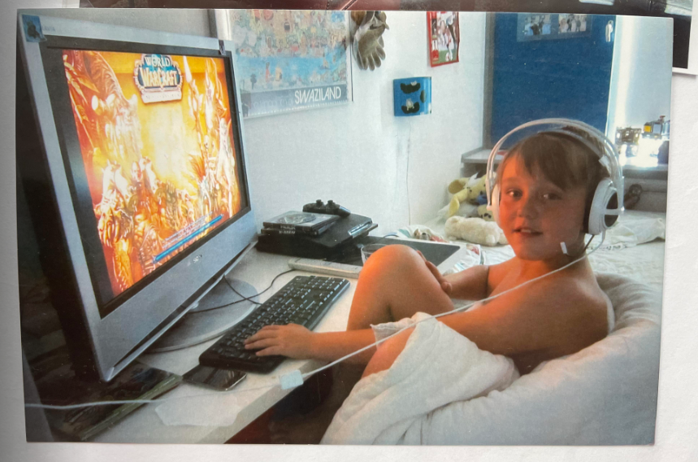

Welcome to my portfolio site, my name is Mads Dalsgaard & im pleased to tell you about myself & show you my work! I was born on the 4th of April 2004, born & raised in Denmark. From very early on i developed a strong passion for video games, espcially WoW. I was introduced to the world of Azeroth back in 2008 & started my own adventures in 2011. Over the years i've conquered many different aspects of the world, from slaying raid bosses on mythic to battling in the arena. But one thing i've always been interested in since i can remember is collectibles. Farming mounts, achievements or whatever it may be, i have always been interested, espcially with the design of mounts & the requirements of getting one. Always been a HUGE fan of the puzzle ones. Hopefully you will have a look around & enjoy what i have made & what's on it's way. LOK'TAR OGAR!
